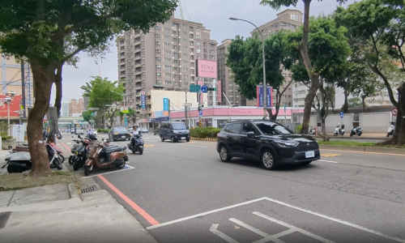

2026 Taiwan Trip Videos
April 6 - 17, 2026
Here are the videos I took during the trip, some interesting, some not.
On the road from
Taipei to Taichung
upon our arrival (0:21).
Food selection for our 火鍋 from
a train
(2:59)! Long, but very interesting.
A
小籠包 maker
(0:23).
On the road
(0:45).
Activity in
民俗公園
(the Folklore Park) (0:42).
Night traffic
along 大連路
(0:25).
Night traffic
along 崇德路
(1:01).
Fishing boats heading
out to sea
(1:16).
A walk along the
高美溼地野生動物保護區
(Gaomei Wetland Preservation Area) boardwalk (0:53).
Walking
down the road
(1:09) to Mei-O's old house.
The
winding and hilly road
(1:03) leading to 三義鄉勝興車站 (Sanyi Township ShengXing Station). This might make you carsick!
Pickleball players
(0:23).
Busy traffic
(1:59) rushing along 崇德路.
A
scrolling message
(0:21) as we traveled on the train from 豐原.
A bouncy ride leaving 捷運松竹站 (the Songzhu MRT Station)
on the MRT
(0:41).
Pulling into
the 四維國小 (Siwei Elementary School) MRT Station (0:19).
A
robot waiter
at The Thai Town Restaurant (0:07).
Close this window
Top